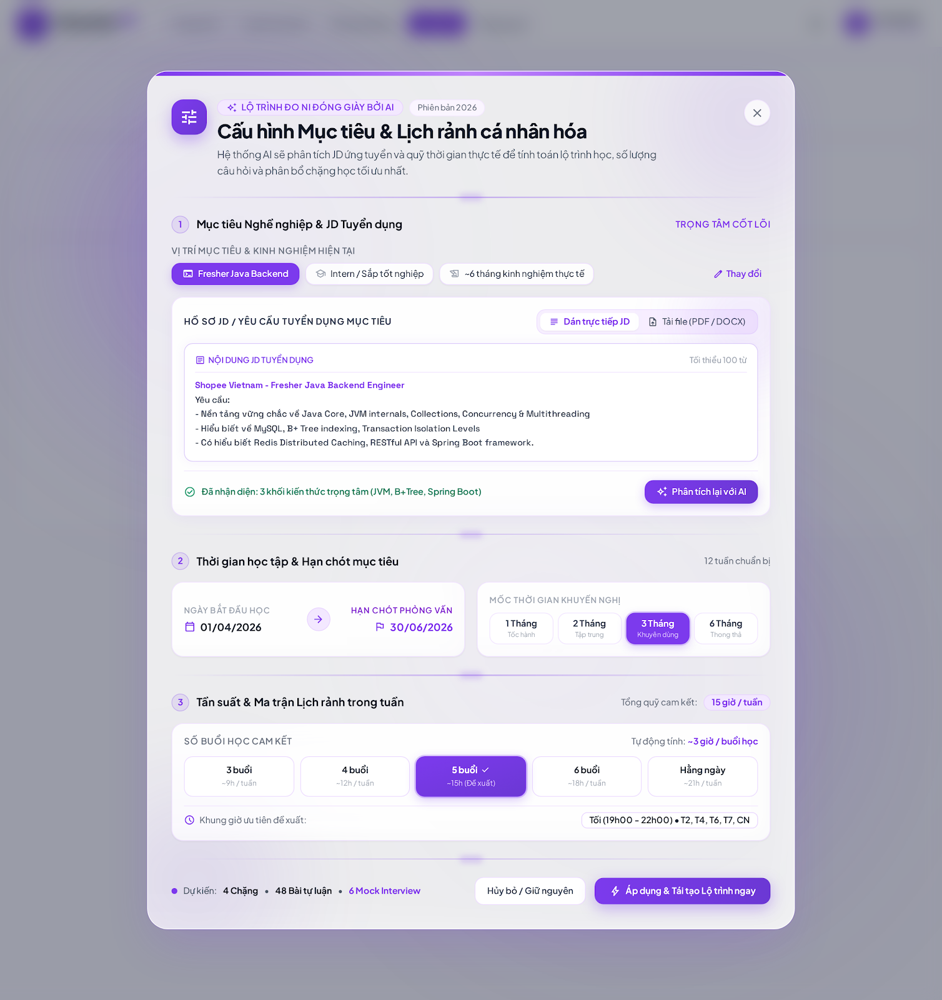
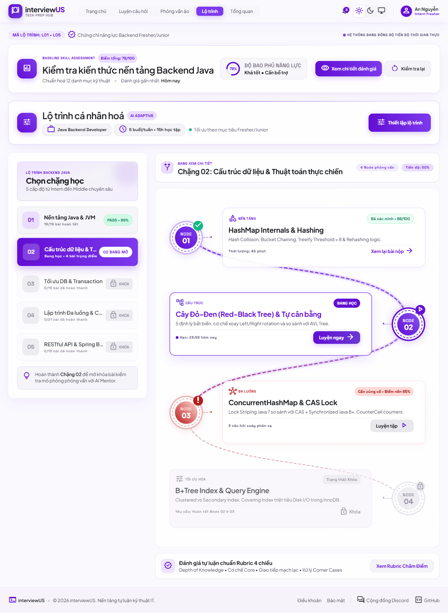
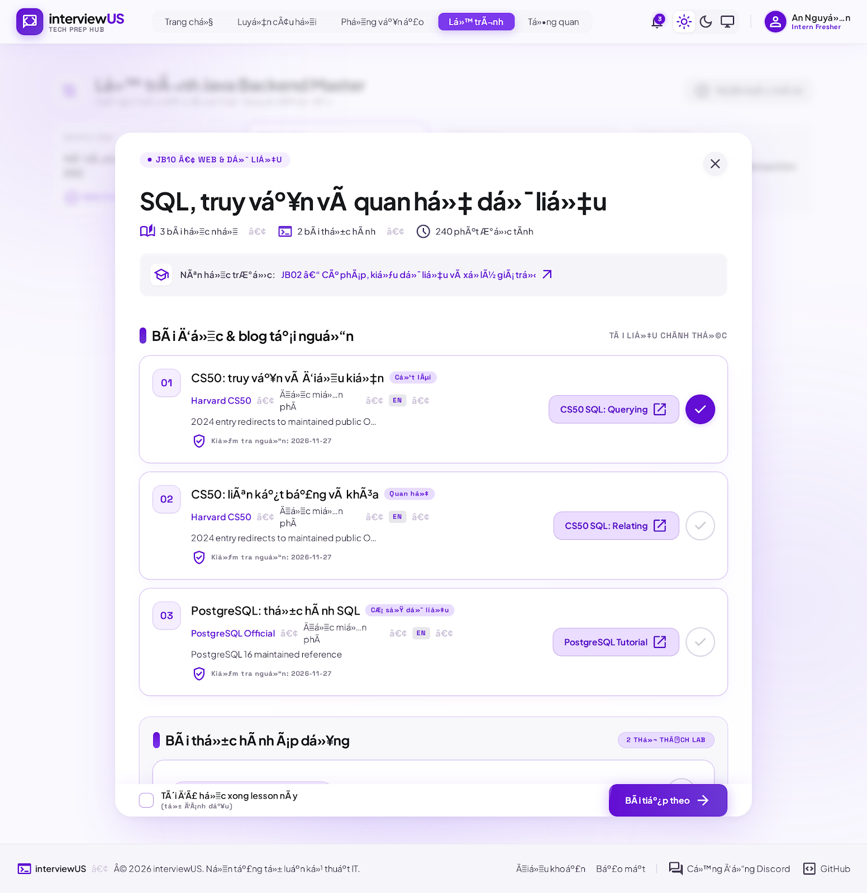
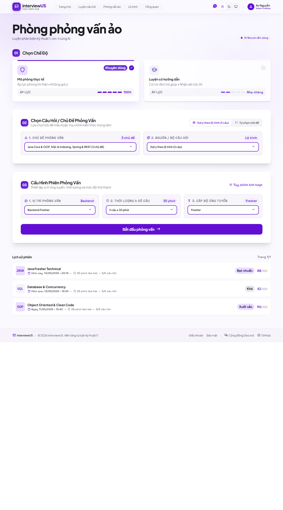
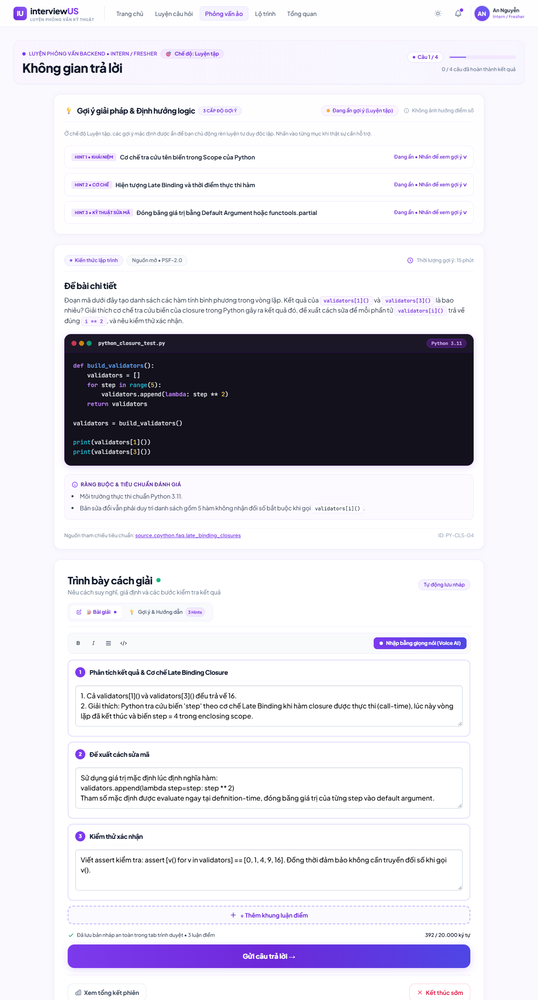
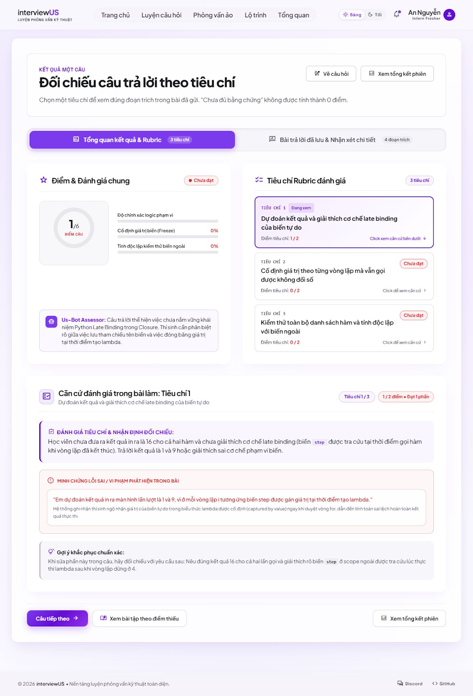
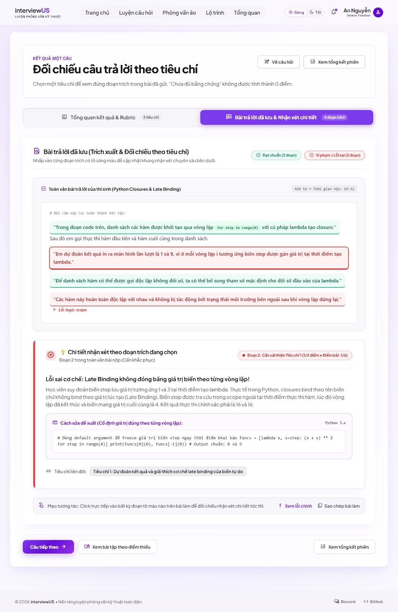
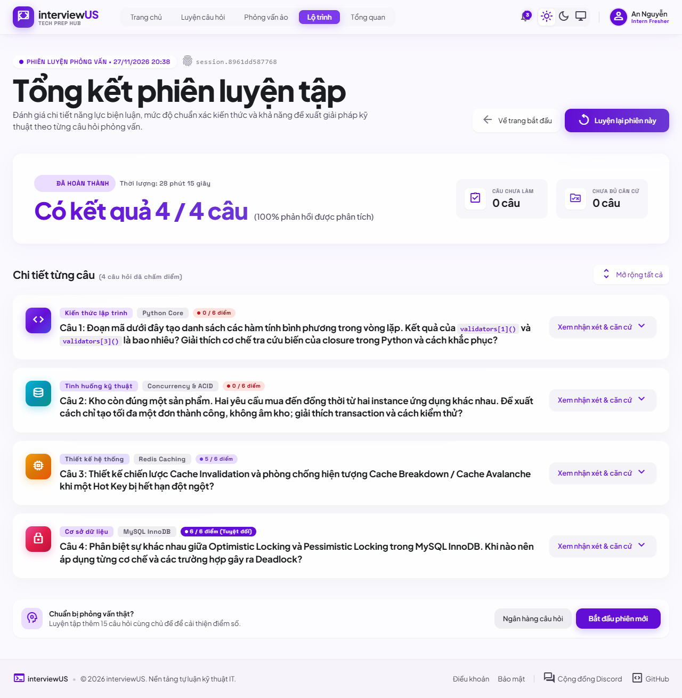

interviewUS · Bàn giao thiết kế 27/11/2026
8 màn hình đã chuẩn hóa tên tiếng Anh
Bản gốc được giữ nguyên nội dung. Chọn HTML để xem prototype hoặc PNG để đối chiếu hình thức.
HTML gốc dùng Tailwind CDN và Google Fonts nên cần mạng. PNG xem được ngoại tuyến. Số liệu và nội dung mẫu chưa phải dữ liệu của app; xem đặc tả để nối API thật.













